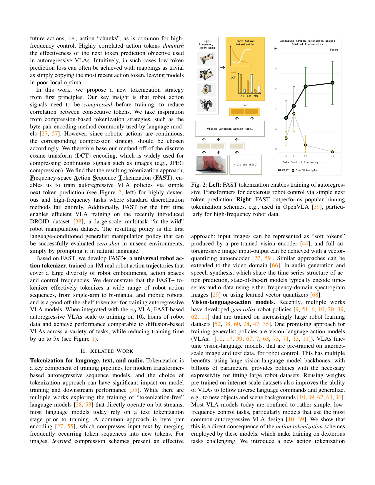
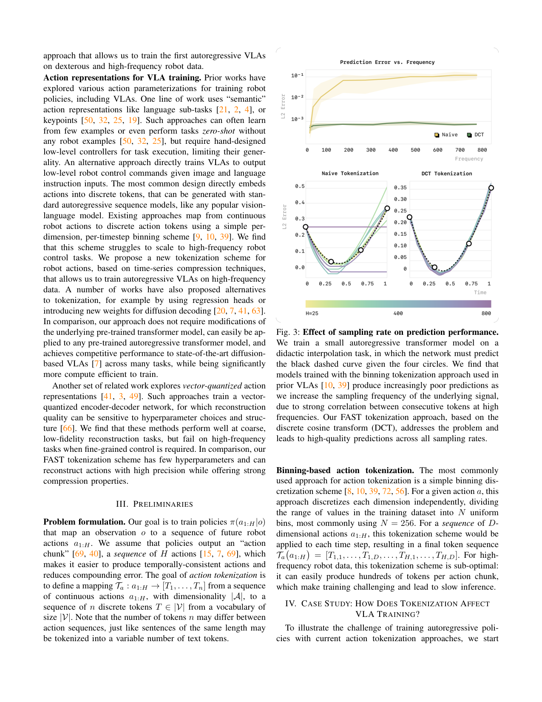
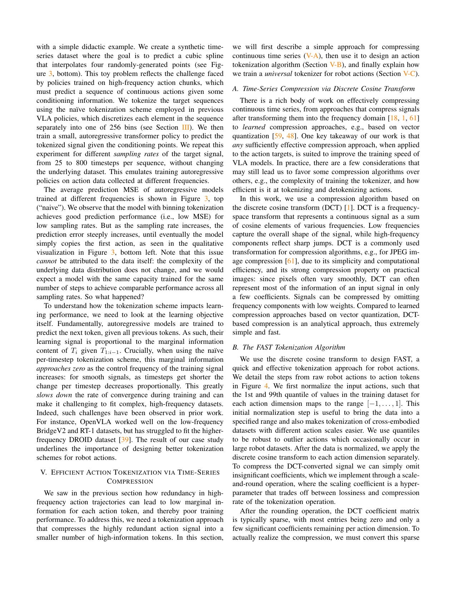
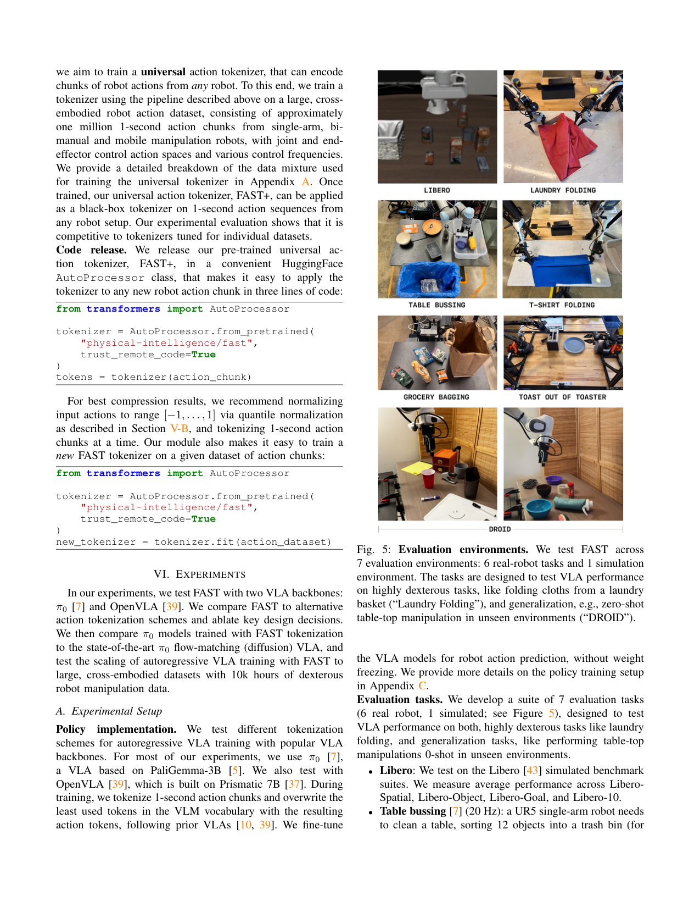
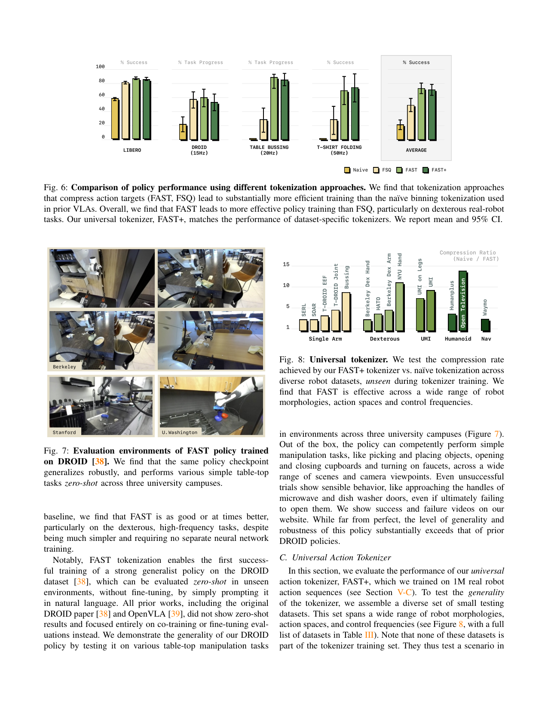
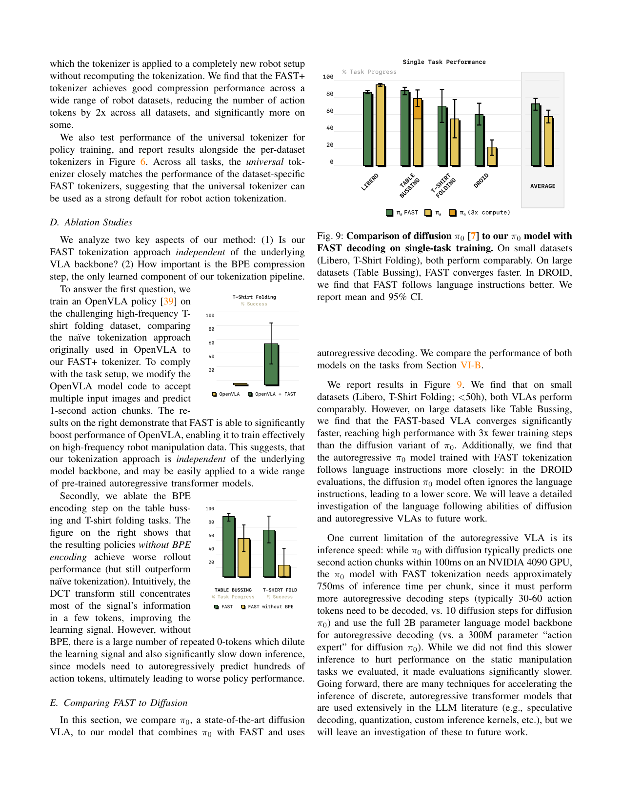
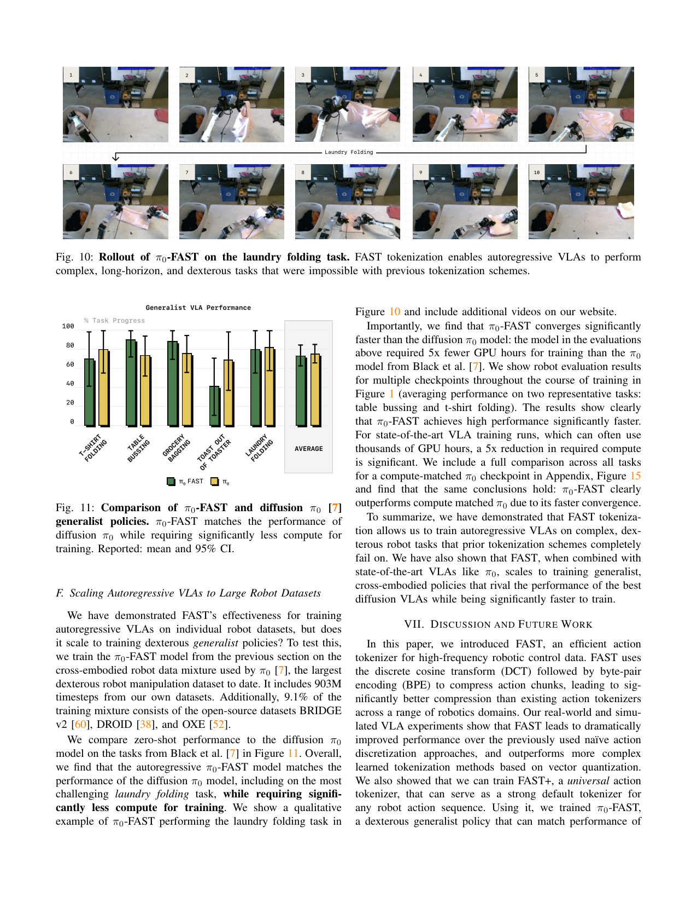
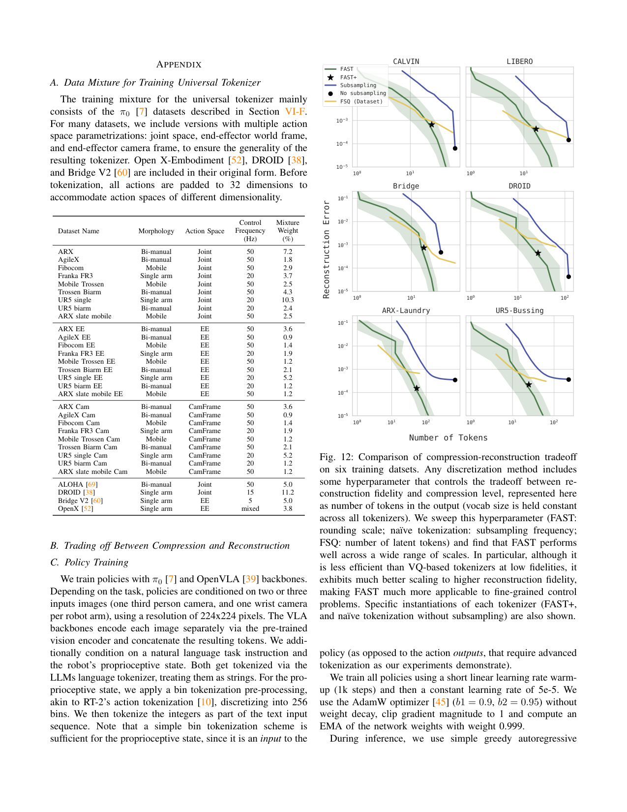
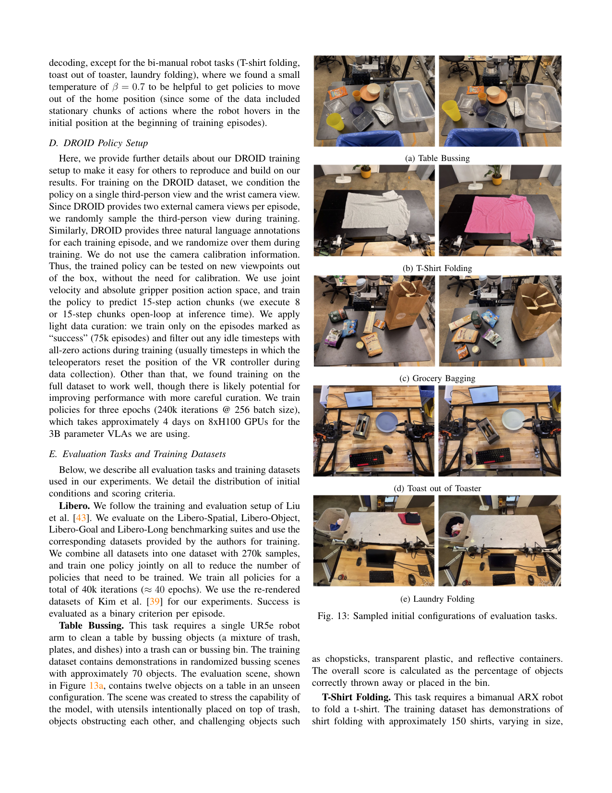
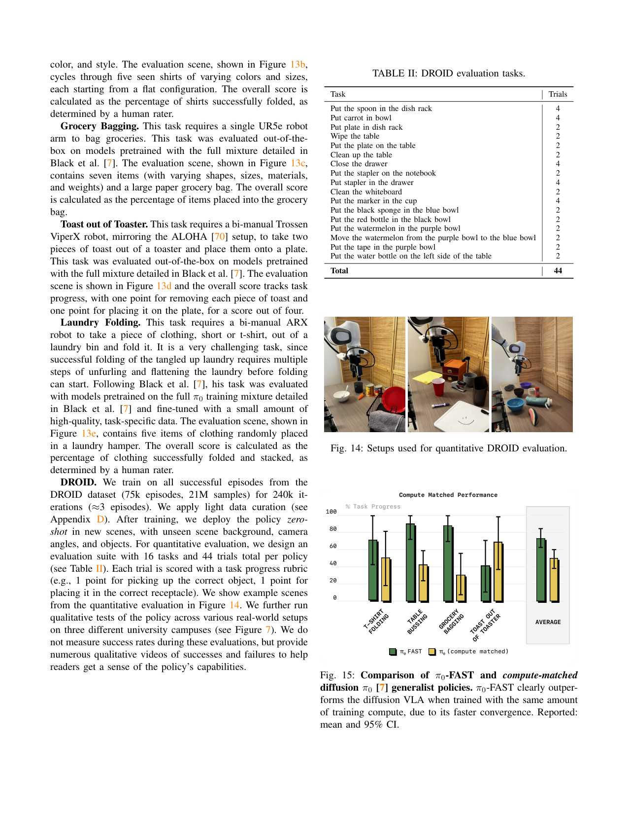

用离散余弦变换(DCT)+BPE 把高频机器人动作序列压缩成短 token,让自回归 VLA 第一次能在灵巧高频任务上训起来,并且比 diffusion VLA 训练快 5 倍。
问题
要解决什么：自回归 VLA(把动作离散成 token、走 next-token prediction 的那一类)在低频任务(BridgeV2/RT-1)上工作,但一上高频灵巧任务(T恤折叠 50Hz、收桌 20Hz、DROID 15Hz)就完全训不动。作者要找到根因并给出一个能用、能 scale、还省训练算力的动作 tokenization 方案。
为什么 prior work 不够：之前所有自回归 VLA(RT-2、OpenVLA)都用 per-dimension、per-timestep binning:每维每步独立分到 256 个 bin,导致一个 1 秒 action chunk 在 50Hz 双臂 14 维上要产生 700 个 token。问题是高频信号相邻 token 高度相关——'复制上一个动作'就能拿到极低的 next-token loss,模型陷入 trivial local optimum,真正该学的细微变化学不到。根因在 tokenization 让学习信号接近零,与模型容量无关。diffusion VLA(π0)绕开了 tokenization,但要训一个 300M 的 action expert + flow matching,训练算力贵;且作者发现它在 DROID 上会忽略语言指令。
输入 / 输出
输入
| 名称 | 类型 | 说明 |
|---|---|---|
| images | image | 2~3 张 224×224:1 张第三视角 + 每臂 1 张腕部相机;各自过视觉编码器后 token 拼接 |
| language instruction | text | 自然语言任务指令,用 LLM 自带的文本 tokenizer 编码 |
| proprioceptive state | vector | 本体感受状态,用 256-bin 离散化成整数,当作文本 token 拼进输入(输入端用 binning 没问题,因为不参与 next-token 学习目标) |
输出
| 名称 | 类型 | 说明 |
|---|---|---|
| action token sequence | discrete tokens | FAST 压缩后的动作 token 序列(~30 tokens/秒/臂),覆盖 1 秒 action chunk |
| action chunk | continuous | detokenize 后的 1 秒连续动作 chunk(维度=|A|,步数=控制频率) |
控制频率：测试覆盖 5/15/20/50 Hz;chunk 固定 1 秒;推理 π0-FAST 单 chunk ~750ms(diffusion π0 ~100ms)
输入拼接 protocol
FAST 是一个 action 编解码器,而非序列拼接方案。它的'protocol'是 token 在主干里的进出流程:
<bos_vision>[VisEnc(img_3rd) ⊕ VisEnc(img_wrist1) (⊕ VisEnc(img_wrist2))]<eos_vision><bos_text>TokLLM(instruction) ⊕ TokLLM(proprio_binned)<eos_text><bos_action>[FAST(action_chunk_1s) = T_1, ..., T_n]<eos_action>
逐段解释:训练 vs 推理差异:训练时 action chunk 是教师强制的 ground truth,FAST 编码一次性给出整串 target token;推理时模型从
数据集
| 数据 | 规模 | 备注 |
|---|---|---|
| Libero(sim) | 270k samples | Libero-Spatial/Object/Goal/Long 合并训练,40k iter/40 epoch |
| Table Bussing | 1 dataset | UR5 单臂 20Hz,~70 物体收桌;评估 12 物体未见配置 |
| T-Shirt Folding | ~150 shirts | ARX 双臂 50Hz 折 T 恤;最难高频灵巧任务 |
| Grocery Bagging | — | UR5 单臂 20Hz,7 物品装袋 |
| Toast out of Toaster | — | Trossen ViperX 双臂 50Hz,从烤面包机取吐司放盘 |
| Laundry Folding | — | ARX 双臂 50Hz,从篮取衣→摊平→折→叠放;最难的 long-horizon 任务 |
| DROID | 75k episodes / 21M samples | Franka 单臂 15Hz,首次 zero-shot 部署 DROID policy 到完全未见环境 |
| FAST+ universal tokenizer 训练集 | 1M 1-秒 action chunks | 跨本体:单臂/双臂/移动/dex 手/humanoid/nav;joint/EEF/cam-frame 动作空间;5~60Hz;详 Table III |
架构（摘要）
主干与结构
backbone：π0 (PaliGemma-3B VLM) 主干 + OpenVLA (Prismatic-7B) 消融
参数：π0 主干 3B;diffusion π0 的 action expert 300M;FAST 本身参数量≈0(只学一个 BPE 词表)
类型：autoregressive next-token VLA + 外挂 DCT-BPE 动作编解码器
关键组件
- VLM 主干(PaliGemma-3B / Prismatic-7B):处理图像+语言+proprio,输出动作 token
- 视觉编码器:每张 224×224 图独立编码后 token 拼接
- proprio 处理:256-bin 离散化成整数→当文本 token(输入侧,不进 loss)
- FAST encoder:量化归一化 → DCT → scale-and-round → 低频优先 flatten → BPE → 动作 token
- FAST decoder:encoder 的精确逆过程(BPE→unflatten→inverse DCT→denormalize)
- FAST+ universal tokenizer:在 1M 跨本体 chunks 上预训练的 BPE 词表,可黑盒用于新机器人
为什么这样设计
根因诊断:next-token 的学习信号正比于 T_i 给定 T_{1:i-1} 的边际信息量;高频信号相邻 token 高度相关,边际信息趋零,模型学到'复制上一步'就够低 loss。解法是先把动作压成低相关的短 token 序列,而非堆模型容量。DCT 是分析式、确定、几乎免训练的连续信号压缩(JPEG 同款),BPE 再把稀疏 DCT 系数无损压成定长词表——整个 tokenizer 只有两个超参(rounding scale γ、BPE 词表大小),远比 VQ-VAE/FSQ 这类学习式压缩简单可控。低频优先 flatten 让模型先预测决定整体形状的低频系数,autoregressive rollout 更稳。
数值 sense
| 项 | 值 |
|---|---|
| vocab_size | BPE 词表 1024(单数据集);FAST+ 也是 1024;动作 token 直接覆盖 LLM 词表里最少用的那些槽位 |
| codebook_dim | N/A(用 DCT 系数空间,非 VQ);动作 token 本身是 LLM 词表里的整数 ID |
| compression_ratio | vs naive binning:BridgeV2 35→20 (1.75×)、DROID 105→29 (3.6×)、Bussing 140→28 (5.0×)、Shirt Fold 700→53 (13.2×);高频任务压缩比越大 |
| tokens_per_chunk | FAST 稳定在 ~30 tokens/秒/臂(双臂 ~60),几乎与频率无关——意味着它逼近了信号的内在复杂度 |
| backbone | π0 = PaliGemma-3B;OpenVLA = Prismatic-7B;图像 224×224;vision encoder 独立编码后 token 拼接 |
| action_chunk | 固定 1 秒;步数=控制频率(Bridge 5 步、DROID 15 步、Bussing 20 步、Shirt Fold 50 步);维度 |A| 从 7(单臂)到 40(humanoid H1) |
| rounding_scale | γ=10(DCT 系数乘 10 后四舍五入);单一超参控制 压缩↔重建 权衡 |
| 训练 | π0-FAST 在 10k 小时跨本体数据(903M timesteps + 9.1% Bridge/DROID/OXE)训练,5× fewer GPU hours 比 diffusion π0;DROID:240k iter × batch 256,3 epoch,8×H100 约 4 天;学习率 5e-5,EMA 0.999,AdamW |
| inference_latency | π0-FAST ~750ms/chunk(需自回归解码 30~60 token,且用全 2B backbone);diffusion π0 ~100ms/chunk(10 步去噪 + 300M action expert)——这是 FAST 的主要短板 |
→ 详见 Architecture tab。
关键结果
| 指标 | 值 | 最强 baseline | setup |
|---|---|---|---|
| token 压缩比 (Shirt Fold 50Hz 双臂) | 13.2× (700→53 tokens) | naive binning 700 tokens | 1-秒 chunk,14 维 @50Hz |
| token 压缩比 (Bussing 20Hz 单臂) | 5.0× (140→28 tokens) | naive 140 tokens | 1-秒 chunk,7 维 @20Hz |
| T-Shirt Folding 成功率 (50Hz 灵巧) | FAST 可训出有效策略 | naive binning 0% (无法训) | ARX 双臂,π0 backbone |
| Table Bussing 收敛速度 | FAST 3× fewer steps 达同等分 | diffusion π0 | UR5 20Hz,大数据集 |
| π0-FAST vs diffusion π0 generalist 平均 | 匹敌 (5 任务平均持平或略胜) | diffusion π0 | 10k 小时跨本体数据,5 任务 |
| 训练算力 | 5× fewer GPU hours | diffusion π0 | π0-FAST vs π0 同性能点 |
| compute-matched generalist 平均 | π0-FAST 明显胜出 | compute-matched diffusion π0 | 同 GPU 小时,5 任务 |
| OpenVLA + FAST (T-Shirt Fold) | 显著提升,可训 | OpenVLA 原生 binning (训不动) | 证明 FAST 与 backbone 解耦 |
| 推理延迟 | π0-FAST ~750ms/chunk | diffusion π0 ~100ms/chunk | NVIDIA 4090;FAST 主要短板 |
| DROID zero-shot 跨校园 | 首次完全未见环境零样本 | 原 DROID paper / OpenVLA 均只做 co-training/fine-tune | Berkeley/Stanford/U.Washington 三地 |
Insights
- 根因不在模型容量,在 tokenization:next-token 学习信号正比于 T_i|T_{1:i-1} 的边际信息量;高频 binning 让相邻 token 高度相关,边际信息趋零,模型学到'复制上一步'就够低 loss,真正的细微变化学不到(p3, Figure 3 toy 实验)。
- 压缩比与频率无关是关键信号:FAST 在所有数据集上稳定 ~30 tokens/秒/臂,说明它逼近了动作信号的内在复杂度,而 binning 的 token 数随频率线性涨——binning 是在编码冗余,FAST 是在编码信息(p7 Table I)。
- FAST 不是'压得最狠'的,是'高保真下仍能压'的:在低 fidelity 区 FSQ 等 VQ 方法压得更狠,但向高 fidelity scaling 时 FAST 远胜——这决定了 FAST 适合精细控制,VQ 适合粗略重建(p16 Figure 12)。
- 自回归 VLA 的语言跟随比 diffusion VLA 更好:DROID 评测中 diffusion π0 经常忽略语言直接抓物体,π0-FAST 听语言。作者未深究但留作 future work(p9)。
- FAST 把'换 tokenizer'从工程杂活变成了 VLA 架构选择的关键杠杆:一个几乎零参数的 DCT-BPE 编码器,让自回归 VLA 在性能和算力上同时追平 diffusion VLA——这是对'VLA 架构之争仍未定'的最有力注脚(p10-11)。
- FAST+ universal tokenizer 的存在意义:它把'每数据集重训 BPE'变成'即插即用',降低了自回归 VLA 的使用门槛,可能比单个性能数字更有长期影响(p6)。
vs 同类工作
- vs naive binning (RT-2/OpenVLA):binning 是 per-dim per-step 独立分 bin,不利用时间相关性,高频下 token 数线性涨、学习信号趋零;FAST 用 DCT 把时间冗余搬到频域稀疏系数,再 BPE 压成定长短序列,token 数与频率解耦。
- vs FSQ/VQ-VAE 这类学习式压缩:VQ 要训一个 encoder-decoder 网络,超参敏感、重建质量不稳定,低 fidelity 区压得狠但高 fidelity scaling 差;FAST 是分析式(DCT)+ lossless(BPE),几乎免训练,高保真下优势明显(p16 Figure 12)。
- vs diffusion VLA (π0):diffusion π0 用 300M action expert + flow matching 绕开 tokenization,推理快(100ms)但训练算力贵、DROID 上忽略语言;π0-FAST 用 FAST 让自回归路线训练快 5×、compute-matched 下更强、语言跟随更好,代价是推理慢(750ms)。两条路线的 trade-off 被清晰量化。
- vs semantic action reps (keypoints/language sub-tasks):那些方法样本高效但需要 hand-designed 低层控制器,泛化受限;FAST 直接输出低层控制命令,不依赖任务特定设计,是更通用的 low-level tokenization。
局限
- 论文自承:推理慢。π0-FAST ~750ms/chunk(diffusion π0 ~100ms),因为要自回归解码 30~60 个 token 且用全 2B backbone,而 diffusion 只需 10 步 + 300M expert。静态任务可接受,动态任务会是问题(p9, Discussion)。
- 论文自承:只在静态操作器上做了真实 policy 评测;FAST+ 在 mobile/dex/humanoid 上只做了离线压缩测试,真实 policy 性能未验证(p11 future work)。
- 论文自承:autoregressive vs diffusion 哪个 VLA 架构更优仍未定,需要更系统对比训练速度/语言 grounding/表达力(p11)。
- 我们读出:chunk 内是开环执行 1 秒动作,不接新观测——这和 DreamZero 的闭环 KV-cache 替换是完全不同的控制范式,在需要中途纠错的动态任务上可能受限(论文未测高频动态任务如接球)。
- 我们读出:γ=10 rounding scale 是个手调超参,论文说'不敏感'但只给了一组数据集上的扫描图(Figure 12),跨本体/跨任务的最优 γ 是否一致未充分论证。
- 我们读出:compression 是 lossy 的(量化丢高频),论文报告的压缩比是'comparable reconstruction accuracy'下的,但 reconstruction error 到 policy 性能的映射没给——高保真 ≠ 高 policy 性能,这条链路论文留白。
可复现性
- code：https://pi.website/research/fast (HuggingFace AutoProcessor: physical-intelligence/fast)
- weights：FAST+ universal tokenizer 开源;π0-FAST policy 检查点随 π0 release
- sim_benchmark：Libero (Spatial/Object/Goal/Long)
- real_eval：UR5 单臂 / ARX 双臂 / Trossen 双臂 / Franka(DROID) + 三校园 zero-shot 部署
FAST 架构详解
> 配套 card.json。FAST 是一个动作编解码器,而非新的神经网络——它外挂在自回归 VLA 主干上,决定"连续动作 chunk 怎么进出 token 序列"。下面先用 Mermaid 把编解码流程和与主干的接口画清,再用文字把每一步讲透。所有数字来自论文(页码标注)。
1. FAST 在系统里的位置(训练 vs 推理)
flowchart LR
subgraph Inputs["VLA 输入侧(主干)"]
IMG["图像 224×224<br/>(3rd + wrist)"]
LANG["语言指令"]
PROP["proprio state"]
end
subgraph VLM["VLM 主干<br/>PaliGemma-3B (π0) / Prismatic-7B (OpenVLA)"]
ENC["视觉编码器<br/>每图独立编码后 token 拼接"]
LLM["LLM token 序列<br/>视觉 token ⊕ 语言 token ⊕ proprio bin token"]
end
subgraph FAST["FAST 动作侧(本文核心)"]
NORM["① quantile 归一化<br/>→ [-1,1]"]
DCT["② 离散余弦变换<br/>(每维独立)"]
QUANT["③ scale-and-round<br/>γ=10, 得稀疏系数"]
FLAT["④ 低频优先 flatten"]
BPE["⑤ BPE 压缩<br/>词表 1024"]
end
subgraph Out["输出"]
ATOK["动作 token 序列<br/>~30 tokens/秒/臂"]
ACT["detokenize<br/>→ 1s 连续动作 chunk"]
end
IMG --> ENC
LANG --> LLM
PROP -->|256-bin 离散化| LLM
ENC --> LLM
LLM -->|next-token prediction| ATOK
ATOK -->|detokenize (BPE 逆→unflatten→inverse DCT→denormalize)| ACT
NORM --> DCT --> QUANT --> FLAT --> BPE
BPE -.->|训练时:覆盖 LLM 词表最少用 token| ATOK训练时:对每个 1 秒 action chunk,FAST encoder 一次性把它编码成 n 个动作 token,作为 next-token loss 的 target;主干全参数 fine-tune,把"图像+语言+proprio → 动作 token"学下来。动作 token 直接覆盖 LLM 词表里使用频率最低的那些槽位(RT-2/OpenVLA 标准做法)。
推理时:主干从 <bos_action> 起逐 token 贪心解码(双臂任务加温度 β=0.7 帮助跳出 home position),吐出 n 个动作 token 后,FAST decoder 精确逆过程还原成 1 秒连续动作 chunk,开环执行整段 chunk——chunk 内不接新观测。
2. 输入/输出契约
| 方向 | 名称 | 类型 | 说明 | ||
|---|---|---|---|---|---|
| 输入 | 图像 | image 224×224 | 1 张第三视角 + 每臂 1 张腕部;各自过视觉编码器后 token 拼接 | ||
| 输入 | 语言指令 | text | LLM 自带 tokenizer 编码 | ||
| 输入 | proprio | vector | 256-bin 离散化成整数串,当文本 token(输入侧,不进 loss) | ||
| 输出 | 动作 token 序列 | discrete | FAST 压缩后 ~30 tokens/秒/臂,覆盖 1 秒 chunk | ||
| 输出 | 动作 chunk | continuous | detokenize 后的 1 秒动作,维度= | A | ,步数=控制频率 |
chunk 跨度:固定 1 秒;步数随频率变(Bridge 5 步、DROID 15 步、Bussing 20 步、Shirt Fold 50 步)。
控制频率:5~50 Hz 覆盖。
推理延迟:π0-FAST ~750ms/chunk(diffusion π0 ~100ms)。
3. 核心诊断:为什么 binning 在高频失败
这是 FAST 存在的理由(p3, Figure 3)。
binning 的机制:每个 action 的每个维度、每个时间步,独立分到 256 个 bin 之一。1 秒 50Hz 双臂 14 维 = 700 个 token。
为什么崩:autoregressive 的学习信号 = T_i 给定 T_{1:i-1} 的边际信息量。高频信号相邻 token 高度相关(50Hz 下相邻动作差值极小),边际信息趋零。模型只需"复制上一个 token"就能拿到极低 loss,陷入 trivial local optimum,真正的细微变化学不到。toy 实验(过 4 点的三次样条,采样率 25→800)干净证明:数据分布不变、模型容量不变,只换 tokenization,binning 误差随采样率陡升,FAST 全程平稳。
关键洞察:问题在 tokenization 让学习信号消失,与模型容量无关。所以解法是先压缩,而非堆参数。
4. FAST 五步流水线(p4-5, Algorithm 1)
① Quantile 归一化
把每个 action 维度的训练数据 1st/99th 分位映射到 [-1, 1]。用分位数而非 min/max 是为了抗离群点(大机器人数据集偶有异常动作)。这步还顺带让跨本体数据集(不同动作 scale)能统一 tokenization。
② 离散余弦变换 (DCT)
对每个 action 维度独立做 DCT,把时域信号转到频域。DCT 把信号表示成一组余弦基的加权和:低频系数承载整体形状,高频系数承载细节。因为机器人动作通常平滑,DCT 后大部分能量集中在少数低频系数,高频系数权重极小——这正是 JPEG 压缩同款性质。
③ Scale-and-round 量化
把 DCT 系数乘以 γ(默认 10)后四舍五入。高频小系数被量化成 0,得到稀疏整数矩阵。γ 是唯一控制"压缩↔重建"权衡的超参:γ 大压缩狠失真多,γ 小反之。论文在 6 数据集上扫过(Figure 12),证明 FAST 在宽 γ 范围内都稳。
④ 低频优先 flatten
把 |A|×H 的稀疏矩阵按"所有维的最低频系数先排,再所有维的次低频..."的顺序展平成 1D 整数序列。这步选择很重要:autoregressive 模型先预测决定整体形状的低频系数,后续高频系数条件充足时再预测,rollout 更稳。行优先(先把单维所有频率排完)会让模型在还没建立全局形状时就预测细节,不稳。
⑤ BPE 无损压缩
对 flatten 后的整数序列训一个 byte-pair encoding 词表(默认 1024),把频繁共现的系数组合 merge 成单 token。BPE 是 lossless、可逆,且产出的词表能直接并入 LLM 既有词表。这步把稀疏的 0 全压掉,把高频共现模式(如某维低频系数常组合出现)压成单 token。
整个流水线可逆:detokenize 时按 BPE 逆→unflatten→inverse DCT→denormalize,精确还原连续动作。
5. 数值 sense:这个 tokenizer 到底多大
| 项 | 值 | 出处 | ||
|---|---|---|---|---|
| BPE 词表大小 | 1024(单数据集与 FAST+ 通用版都用) | 论文 V-B | ||
| 动作 token 表示 | LLM 词表里的整数 ID(覆盖最少用的槽位) | 论文 VI-A | ||
| 压缩比 vs naive | Bridge 1.75× / DROID 3.6× / Bussing 5.0× / Shirt Fold 13.2× | 论文 Table I (p7) | ||
| tokens/chunk | FAST 稳定 ~30/秒/臂(双臂 ~60),与频率无关 | 论文 Table I 注释 | ||
| 主干 | π0 = PaliGemma-3B;OpenVLA = Prismatic-7B | 论文 VI-A | ||
| 图像 | 224×224,每张独立编码后 token 拼接 | 论文 Appendix C | ||
| action chunk | 1 秒;步数=频率;维度 | A | 从 7(单臂)到 40(humanoid H1) | 论文 Table III |
| rounding scale γ | 10(所有单数据集实验同值) | 论文 V-B | ||
| 训练算力 | π0-FAST 用 5× fewer GPU hours 比 diffusion π0;DROID: 240k iter × batch 256, 3 epoch, 8×H100 约 4 天 | 论文 VI-F, Appendix D | ||
| 学习率/优化器 | lr 5e-5, AdamW (b1=0.9,b2=0.95), 无 weight decay, grad clip 1, EMA 0.999 | 论文 Appendix C | ||
| 推理延迟 | π0-FAST ~750ms/chunk;diffusion π0 ~100ms/chunk | 论文 VI-E |
给听众的标尺:1024 词表、γ=10、~30 tokens/秒/臂、1 秒 chunk、3B 主干、8×H100 训 4 天(DROID)。压缩比是 FAST 最该记住的数字——它随频率涨,binning 是线性涨、FAST 是常数。
6. FAST+ 通用 tokenizer:把"每数据集一训"变"即插即用"
唯一需要训练的组件是 BPE 词表。作者在 1M 条 1 秒跨本体 action chunks 上预训练一个通用词表(单臂/双臂/移动/dex 手/humanoid/nav,joint/EEF/cam-frame,5~60Hz),发布成 HuggingFace AutoProcessor。
from transformers import AutoProcessor
tokenizer = AutoProcessor.from_pretrained(
"physical-intelligence/fast", trust_remote_code=True)
tokens = tokenizer(action_chunk)为什么通用化成立:FAST 压缩比与频率无关、稳定 ~30 tokens/秒/臂,说明它逼近了动作信号的内在复杂度,不依赖具体本体。实测 FAST+ 在所有未参与训练的数据集上都 ≥2× 压缩(Figure 8),policy 训练性能追平数据集专属 FAST(Figure 6)。
7. 与 diffusion VLA 的根本 trade-off
flowchart TB
subgraph AR["自回归 VLA (π0-FAST)"]
AR1["FAST 压缩<br/>~30 tokens/秒/臂"]
AR2["主干全 3B 参数<br/>自回归解码 30~60 步"]
AR3["训练快 5×<br/>语言跟随更好"]
AR4["推理 750ms/chunk<br/>(慢)"]
end
subgraph DF["Diffusion VLA (π0)"]
DF1["绕开 tokenization<br/>连续动作 + flow matching"]
DF2["300M action expert<br/>10 步去噪"]
DF3["训练算力贵 5×<br/>DROID 上忽略语言"]
DF4["推理 100ms/chunk<br/>(快)"]
end
AR1 --> AR2 --> AR3
AR2 --> AR4
DF1 --> DF2 --> DF3
DF2 --> DF4关键结论(p10-11):在性能和算力效率上,π0-FAST 匹敌甚至超过 diffusion π0;在推理速度上,diffusion π0 仍快 7.5×。两条路线的 trade-off 被清晰量化——论文不声称某条绝对更优,只说"自回归路线重新有竞争力了"。
8. 与其它 tokenization 路线的对比
| 路线 | 机制 | 高频表现 | 训练成本 |
|---|---|---|---|
| naive binning (RT-2/OpenVLA) | per-dim per-step 256 bin | 崩(700 tokens, 0 学习信号) | 0 |
| FSQ / VQ-VAE | 学习式 vector quantization | 比 binning 好,输 FAST | 高(要训 encoder-decoder) |
| FAST | DCT + scale-round + BPE | 最稳,高保真下优势大 | 极低(只训 BPE 词表) |
| semantic reps (keypoints/lang) | 语义级动作表示 | 样本高效但需 hand-designed 控制器 | 中 |
FAST 的位置:它不是"压得最狠"的(VQ 在低 fidelity 区更狠),是"高保真下仍能压且几乎免训练"的——这决定了它适合精细控制场景(Figure 12)。
门面图:FAST 让 π0-FAST 训得快又好

原文 caption：We propose FAST, a simple yet effective approach for tokenization of robot action trajectories via time-series compression. FAST enables training of autoregressive VLAs that solve complex dexterous manipulation tasks. We use it to train π0-FAST, a generalist robot policy that matches the performance of the state-of-the-art π0 diffusion VLA while training 5x faster.
上方的训练曲线对比:π0-FAST(蓝)在 table bussing + T-shirt folding 平均分上比 diffusion π0 早很多达到同等水平,5× 训练加速。下方的灵巧任务可视化(折衣/收桌)说明 FAST 真让自回归 VLA 能做高频灵巧操作(作用远超'只压 token')。核心信息:一个看似工程的小改(tokenizer),把自回归 VLA 从'低频专属'推进到'匹敌 diffusion VLA 且更省算力'。
为什么需要 FAST

原文 caption：Left: FAST tokenization enables training of autoregressive Transformers for dexterous robot control via simple next token prediction. Right: FAST outperforms popular binning tokenization schemes, e.g., used in OpenVLA, particularly for high-frequency robot data.
右图是核心诊断:横轴控制频率(2/5/10/20Hz),纵轴策略分数。OpenVLA 风格 binning 在 2Hz 还行,频率一高分数崩到接近 0;FAST 全频段都稳。左图示意 FAST 让自回归 VLA 用 next-token 就能学灵巧任务。这张图直接对应论文的根因论断:binning 在高频失败源于 tokenization 让学习信号消失,与模型无关。
toy 实验:采样率 vs 预测误差

原文 caption：Effect of sampling rate on prediction performance. Models trained with binning produce increasingly poor predictions as we increase sampling frequency, due to strong correlation between consecutive tokens. Our FAST tokenization addresses the problem.
一个受控 toy 任务:预测过 4 个点的三次样条。横轴采样率(25→800 步)。上:MSE 曲线,binning(蓝)随采样率升高误差陡升,最后模型直接抄第一个动作(右下可视化);FAST 全程低误差。这是论文最干净的因果论证:数据分布不变、模型容量不变,只换 tokenization,结论完全不同。说明根因是 tokenization 而非数据或模型。
FAST tokenizer 流程(最重要)

原文 caption：Overview of the FAST action tokenization pipeline. Given a normalized chunk of actions, we apply DCT to convert the signal to the frequency domain. We then quantize the DCT coefficients and use BPE to compress the flattened sequence into the final action token sequence.
全文最该看的图。5 步流水线:①归一化 action chunk(1st/99th 分位映射到 [-1,1]);②对每维单独做 DCT,转到频域;③scale-and-round 量化(γ=10),得到稀疏系数矩阵(大量 0);④按低频优先 flatten(所有维的最低频系数先排,再次低频...),让 autoregressive 先预测整体形状;⑤BPE 无损压缩成定长词表的 token。这张图同时回答'怎么编码、为什么可逆、超参在哪'。对应 Algorithm 1。
7 个评测环境

原文 caption：We test FAST across 7 evaluation environments: 6 real-robot tasks and 1 simulation environment. Tasks test VLA performance on highly dexterous tasks (Laundry Folding) and generalization (zero-shot DROID).
评测套件总览:Libero(sim)、Table Bussing(20Hz UR5)、T-Shirt Folding(50Hz ARX 双臂)、Grocery Bagging(20Hz UR5)、Toast(50Hz Trossen 双臂)、Laundry Folding(50Hz ARX 双臂,最难 long-horizon)、Zero-shot DROID(15Hz Franka,首次完全未见环境评测)。覆盖频率 5~50Hz、单臂/双臂、sim/real,说明结论不是单一 setup 的偶然。
四种 tokenizer 主结果

原文 caption：Comparison of policy performance using different tokenization approaches. Compression-based tokenizers (FAST, FSQ) lead to substantially more efficient training than naïve binning. FAST leads to more effective training than FSQ, particularly on dexterous real-robot tasks. FAST+ matches dataset-specific tokenizers.
4 任务 × 4 tokenizer(Naive/FSQ/FAST/FAST+)主结果柱状图。Naive 在 50Hz Shirt Fold 和 20Hz Bussing 上完全打不出分;FSQ 比 Naive 好但仍输 FAST;FAST 在所有任务最强或并列;FAST+ universal tokenizer 几乎追平数据集专属 FAST。两个关键结论:①压缩是关键(不止 FAST 特殊);②FAST 比 FSQ 这种学习式压缩更稳更简单。
DROID zero-shot 三校园
原文 caption：Evaluation environments of FAST policy trained on DROID. The same policy checkpoint generalizes robustly, performs simple table-top tasks zero-shot across three university campuses.
Berkeley/Stanford/U.Washington 三地部署同一 DROID policy 的照片。关键定性结论:这是 DROID 数据集第一次被训出'完全未见环境零样本'policy(原 DROID paper 和 OpenVLA 都只做 co-training/fine-tuning 评测)。policy 能做 pick-and-place、开关抽屉、开水龙头;失败 trial 也表现合理(如接近微波炉门把手)。
FAST+ 跨本体压缩比
原文 caption：Universal tokenizer. We test the compression rate achieved by FAST+ vs naïve tokenization across diverse robot datasets, unseen during tokenizer training. FAST is effective across a wide range of robot morphologies, action spaces and control frequencies.
横轴数据集(单臂/dex/humanoid/nav 共 ~15 个,均未参与 FAST+ 训练),纵轴 naive/FAST 压缩比(对数)。FAST+ 在所有形态上都至少 2× 压缩,部分到 10×。证明 FAST+ 不是只在训练分布内有效,可作为通用黑盒 tokenizer。对应 Table III 的完整数据集列表。
FAST vs diffusion π0(单任务)

原文 caption：Comparison of diffusion π0 to our π0 model with FAST decoding on single-task training. On small datasets both perform comparably. On large datasets (Table Bussing), FAST converges faster. In DROID, FAST follows language instructions better.
4 任务柱状图。小数据集(Libero/T-Shirt)<50h 两者持平;大数据集(Table Bussing)FAST 用 3× 更少步数达同等水平;DROID 上 FAST 分数更高——作者归因 diffusion π0 经常忽略语言指令(会直接抓物体),FAST 自回归 VLA 更听语言。这是 FAST 主卖点之一:不仅快,还在某些维度更好。
Laundry Folding rollout

原文 caption：Rollout of π0-FAST on the laundry folding task. FAST tokenization enables autoregressive VLAs to perform complex, long-horizon, dexterous tasks that were impossible with previous tokenization schemes.
π0-FAST 在 laundry folding(从篮取衣→摊平→折→叠放)的 10 步 rollout。这是论文最难任务,以前 binning tokenizer 完全训不出。FAST 让纯自回归 VLA(无 diffusion)也能做多阶段灵巧操作。是'FAST 解锁新能力'的视觉证据。
通用 VLA:π0-FAST vs diffusion π0
原文 caption：Comparison of π0-FAST and diffusion π0 generalist policies. π0-FAST matches the performance of diffusion π0 while requiring significantly less compute for training.
5 个 generalist 任务平均柱状图。π0-FAST(自回归+FAST)在 T-Shirt/Bussing/Grocery/Toast/Laundry 平均上匹敌 diffusion π0,但训练用 5× 更少 GPU 小时。这是论文最终论点:FAST 让自回归 VLA 在'性能'和'算力效率'两个维度同时追平甚至超过 diffusion VLA。
压缩↔重建权衡曲线

原文 caption：Comparison of compression-reconstruction tradeoff on six training datasets. FAST performs well across a wide range of scales. Although less efficient than VQ-based tokenizers at low fidelities, it exhibits much better scaling to higher reconstruction fidelity, making FAST much more applicable to fine-grained control.
6 数据集上横轴 token 数、纵轴重建误差的权衡曲线。FAST 在低 fidelity 区不如 FSQ 极致压缩,但向高 fidelity 区 scaling 好得多——这对精细控制(高频灵巧任务)是决定性的。说明 FAST 的优势不在'压得最狠',而在'高保真下仍能压'。
5 个评测任务的初始配置

原文 caption：Sampled initial configurations of evaluation tasks: Table Bussing / T-Shirt Folding / Grocery Bagging / Toast out of Toaster / Laundry Folding.
5 个真实评测任务的初始场景照片。给读者一个'评测难度'的直观感受:Bussing 12 物体混 trash/plates、T-Shirt 5 件不同色码、Grocery 7 物品入袋、Toast 双臂取吐司、Laundry 从篮取衣折放。是结果可信度的环境证据。
DROID 定量评测场景

原文 caption：Setups used for quantitative DROID evaluation. 16 tasks, 44 trials total per policy.
DROID 定量评测的 16 个任务/44 trial 的初始场景照片。配合 Table II 的任务清单(放勺入碗、关抽屉、擦白板等)。定义了 DROID zero-shot 评测的口径——完全未见环境、视角、物体,只靠自然语言 prompt。
compute-matched 对比
原文 caption：Comparison of π0-FAST and compute-matched diffusion π0 generalist policies. π0-FAST clearly outperforms the diffusion VLA when trained with the same amount of training compute, due to its faster convergence.
5 任务 compute-matched 柱状图(两边用同样 GPU 小时)。π0-FAST 在 T-Shirt/Bussing/Grocery/Toast 平均上明显超过 compute-matched diffusion π0。这是 Figure 11 的补充论证:其含义是'同算力下 FAST 更强'(而非'FAST 用更少算力达到同等')——根因是收敛更快。
🎧 音频版
时长 18:03 · Edge TTS
FAST: Efficient Action Tokenization for Vision-Language-Action Models
2025-01-16，Physical Intelligence 的 Karl Pertsch 等人发布的论文，标题是 FAST: Efficient Action Tokenization for Vision-Language-Action Models。
开场：这篇论文真正要解决什么
FAST 是一个动作 tokenizer——决定"连续的机器人动作信号，怎么变成离散 token 喂给自回归 VLA"的那个组件。它不是一个新模型，也不是一个新的训练方法。但就是这么个看起来很工程的小东西，作者发现它才是自回归 VLA 在高频灵巧任务上完全训不动的根因。
问题长这样：自回归 VLA，也就是 RT-2、OpenVLA 那一脉，把动作离散成 token、走 next-token prediction，在低频任务上工作得不错——5Hz 的 BridgeV2、RT-1 都没问题。但一上高频灵巧任务，50Hz 的 T 恤折叠、20Hz 的收桌、15Hz 的 DROID，就完全训不动。同一套模型架构、同样的数据规模，低频能学，高频学不会。
diffusion VLA 的 π0 绕开了 tokenization，用 300M 的 action expert + flow matching 直接出连续动作，能跑高频，但训练算力贵，而且在 DROID 上还经常忽略语言指令。
作者要回答的问题是：自回归 VLA 在高频失败的根因到底是什么？能不能不换架构、不堆参数，就把这个根因修掉，让自回归路线重新有竞争力？
根因诊断：不是模型不够大，是学习信号被 tokenization 吃掉了
这是这篇论文最干净的一段论证，值得讲透。
自回归模型训练时，学的是"给定前面所有 token，预测下一个 token"。所以它的学习信号，正比于第 i 个 token 给定前面 i-1 个 token 的边际信息量——也就是这个 token 有多"出乎意料"。
现在看传统 binning 怎么做：每个 action 的每个维度、每个时间步，独立分到 256 个 bin 之一。一个 1 秒的 action chunk，50Hz、双臂 14 维，就是 50 × 14 = 700 个 token。问题是高频信号相邻时间步高度相关——50Hz 下相邻两个动作差值极小。这意味着什么？意味着第 i 个 token 给定第 i-1 个 token 的边际信息量趋近于零。"复制上一个动作"就能拿到极低的 next-token loss。
模型于是学到一个 trivial local optimum：直接抄上一步。它拿到了低 loss，但真正该学的细微变化一点没学。这就解释了为什么 binning 在高频崩——根因是 tokenization 把学习信号消灭了,与模型容量无关。
论文用一个非常漂亮的 toy 实验证明这点（Figure 3）。任务很简单：预测过 4 个随机点的三次样条。作者只改一个变量——采样率，从 25 到 800。数据分布不变、模型容量不变、训练步数不变，只换采样率。结果：binning 的预测误差随采样率升高陡升，最后模型直接抄第一个动作；FAST 全程平稳。这是论文最干净的因果论证：根因就是 tokenization，不是别的。
FAST 的解法：先把动作压成短序列，再 next-token
既然根因是相邻 token 太相关，解法就很直接：先把动作信号压缩成低相关的短 token 序列，再喂给自回归模型。
FAST 的全名是 Frequency-space Action Sequence Tokenization，五步流水线，对应 Figure 4，我按顺序讲。
第一步，quantile 归一化。把每个 action 维度的训练数据，1st 到 99th 分位映射到 -1 到 1 区间。用分位数不用 min/max，是为了抗离群点——大机器人数据集偶有异常动作。这步还顺带让不同本体的数据（动作 scale 不一样）能统一处理。
第二步，离散余弦变换，DCT。对每个 action 维度独立做 DCT，把时域信号转到频域。DCT 把信号表示成一组余弦基的加权和：低频系数承载整体形状，高频系数承载细节。因为机器人动作通常平滑，DCT 后大部分能量集中在少数低频系数，高频系数权重极小——这是 JPEG 压缩同款性质，不是作者发明的，是借来的。
第三步，scale-and-round 量化。把 DCT 系数乘以 γ（默认 10）后四舍五入。高频小系数被量化成 0，得到一个稀疏整数矩阵。γ 是唯一控制"压缩 vs 重建"权衡的超参。
第四步，低频优先 flatten。把 |A|×H 的稀疏矩阵展平成 1D 序列，但顺序很讲究：所有维度的最低频系数先排，再所有维度的次低频，以此类推。为什么这样？因为自回归模型要先预测决定整体形状的低频系数，等全局形状建立了再预测高频细节，rollout 才稳。如果按行优先（先把单维所有频率排完），模型在还没建立全局形状时就被迫预测细节，会乱。
第五步，BPE 无损压缩。对 flatten 后的整数序列训一个 byte-pair encoding 词表，默认 1024 大小。BPE 把频繁共现的系数组合 merge 成单 token，把稀疏的 0 全压掉。这步是 lossless、可逆的，产出的词表能直接并入 LLM 既有词表。
整个流水线可逆：detokenize 时 BPE 逆→unflatten→inverse DCT→denormalize，精确还原连续动作。
注意，整个 FAST 只有两个超参：rounding scale γ 和 BPE 词表大小。论文说都不敏感，所有单数据集实验都用同一组值。这跟 VQ-VAE、FSQ 这种学习式压缩比，简单太多了——那些要训一个 encoder-decoder 网络，超参敏感，重建质量还依赖数据集。
输入到底怎么拼成一条序列
FAST 不是一个序列拼接方案，它是一个 action 编解码器，外挂在 VLA 主干上。我把 token 在主干里的进出流程写成一条显式序列，你在脑子里能建出来。
序列大致长这样：开头是 <bos_vision>，里面是多张图——一张第三视角、每臂一张腕部相机，每张图各自过预训练视觉编码器，得到的 token 在序列维拼接（注意是序列维，不是通道维）。然后 <eos_vision>。接着 <bos_text>，里面是语言指令，加上 proprio 状态——proprio 被预先 256-bin 离散化成整数串，再当文本 token 编码进去。<eos_text>。最后 <bos_action>，这是 FAST 真正改造的地方，原始 1 秒 action chunk 经过五步流水线压成 n 个动作 token，<eos_action>。
这里有几个坑要特别说清，不然容易误解。
第一，proprio 用 binning 完全没问题。作者专门强调这点。binning 在动作输出上崩，是因为动作输出要参与 next-token loss，高频让学习信号消失。但 proprio 是输入，不参与 next-token loss，用简单 binning 就够了。不要把"binning 在动作上崩"推广成"binning 哪里都不行"。
第二，动作 token 是直接覆盖 LLM 词表里最少用的那些槽位。这是 RT-2、OpenVLA 的标准做法，FAST 沿用。好处是不需要改 backbone 结构，任何预训练 autoregressive transformer 都能直接接 FAST。论文专门做了 OpenVLA 消融证明这点：把 OpenVLA 原生 binning 换成 FAST，T 恤折叠从训不动变成能训。这说明 FAST 和 backbone 是解耦的。
第三，训练和推理时 action 这段的形态不一样。训练时，action chunk 是教师强制的 ground truth，FAST 编码一次性给出整串 target token，模型学"看到图像+语言+proprio，吐出这串 token"。推理时，模型从 <bos_action> 起逐 token 贪心解码（双臂任务加个 0.7 的温度帮助跳出 home position），吐完 n 个 token 后 detokenize 成 1 秒连续动作，开环执行整段 chunk。
这就是一个关键区别：FAST 的 chunk 内是开环的，1 秒动作执行期间不接新观测。这跟 DreamZero 那种闭环 KV-cache 替换完全不同。在需要中途纠错的动态任务上，开环 1 秒可能是个限制——论文没测高频动态任务，比如接球。
给你一个数值 sense：这套 tokenizer 到底多大
光说"1024 词表"可能没感觉，我把维度念细一点。
BPE 词表是 1024，单数据集实验和 FAST+ 通用版都用这个大小。动作 token 本身就是 LLM 词表里的整数 ID，覆盖那些最少用的槽位。
压缩比是 FAST 最该记住的数字。论文 Table I 给了四个数据集的对比，全部用 1 秒 chunk、对比相同重建精度下的 token 数。BridgeV2 是 5Hz 单臂 7 维，naive 35 个 token，FAST 20 个，压缩 1.75 倍。DROID 是 15Hz 单臂 7 维，naive 105 个，FAST 29 个，压缩 3.6 倍。Bussing 是 20Hz 单臂 7 维，naive 140 个，FAST 28 个，压缩 5 倍。Shirt Fold 是 50Hz 双臂 14 维，naive 700 个，FAST 53 个，压缩 13.2 倍。
看出规律了吗？频率越高、维度越多，FAST 的压缩比越大。但更关键的数字是这个：FAST 在所有数据集上稳定在每秒每臂约 30 个 token，几乎与频率无关。这说明什么？说明 FAST 逼近了动作信号的内在复杂度——它编码的是信息，不是冗余。而 binning 的 token 数随频率线性涨，它编码的是冗余。
主干方面，π0 用的是 PaliGemma-3B，3B 参数；消融实验用 OpenVLA，Prismatic-7B。图像输入 224×224，每张图独立过视觉编码器后 token 拼接。FAST 本身参数量约等于零，只学一个 BPE 词表。
action chunk 固定 1 秒，步数等于控制频率，维度 |A| 从单臂的 7 到 humanoid H1 的 40 都有。rounding scale γ 默认 10，所有单数据集实验同值。
训练规模：π0-FAST 在 10k 小时跨本体数据上训练，比 diffusion π0 少用 5 倍 GPU 小时。DROID 那个设置具体点：240k 迭代 × batch 256，跑 3 个 epoch，8 张 H100 大约 4 天。学习率 5e-5，AdamW 优化器，EMA 权重 0.999。
推理延迟是 FAST 的主要短板：π0-FAST 大约 750 毫秒一个 chunk，因为要自回归解码 30 到 60 个 token，还得用完整的 2B backbone。对比之下 diffusion π0 只要 100 毫秒——它只要 10 步去噪，外加只跑 300M 的 action expert。这个 7.5 倍的推理速度差距，是 FAST 用自回归换来的代价。
记住这套数字，后面听别的 VLA 论文时，可以拿它当标尺：1024 词表、γ=10、30 token/秒/臂、1 秒 chunk、3B 主干、8×H100 训 4 天。压缩比随频率涨，binning 线性涨、FAST 是常数——这是 FAST 最有信息量的一个数字。
FAST+：把"每数据集重训 BPE"变成"即插即用"
整个 FAST 只有一个需要训练的组件——BPE 词表。每个新数据集都要重训这个词表，虽然只要几分钟，但增加使用摩擦。
作者于是训了一个 FAST+，通用 tokenizer。在 100 万条 1 秒跨本体 action chunks 上预训练一个 BPE 词表，覆盖单臂、双臂、移动、dex 手、humanoid、nav，joint、EEF、cam-frame 各种动作空间，5 到 60Hz 各种频率。发布成 HuggingFace 的 AutoProcessor，三行代码就能用。
为什么通用化能成立？因为 FAST 的压缩比与频率无关、稳定 30 token/秒/臂，说明它逼近了动作信号的内在复杂度，不依赖具体本体。实测 FAST+ 在所有没参与训练的数据集上都至少 2 倍压缩，部分到 10 倍。而且 policy 训练性能追平数据集专属 FAST。
这点我特别想强调。FAST+ 的存在意义，可能比单个性能数字更有长期影响。它把"换个机器人就要重训 tokenizer"这个使用门槛拆掉了，让自回归 VLA 真正变成即插即用。这对整个 VLA 社区的 Adoption 是实打实的贡献。
关键结果：不仅赢，还在算力效率和语言跟随上赢
我挑几个有对照的数字。
压缩比：T 恤折叠 50Hz 双臂，13.2 倍，从 700 个 token 压到 53 个。这是最高的，因为频率高、维度多。收桌 20Hz 单臂，5 倍。压缩比随频率涨，但 FAST 的绝对 token 数稳定。
T 恤折叠成功率：FAST 能训出有效策略，naive binning 是 0——完全训不动。这是定性结论：FAST 解锁了 binning 完全做不了的任务。
收桌收敛速度：FAST 用 3 倍更少的训练步数达到 diffusion π0 同等水平。在大数据集上 FAST 收敛明显快。
π0-FAST vs diffusion π0 generalist：5 个 generalist 任务平均，π0-FAST 匹敌甚至略胜 diffusion π0，但训练用 5 倍更少 GPU 小时。这是论文最终卖点：性能追平、算力效率胜出。
compute-matched 对比：两边用同样 GPU 小时，π0-FAST 在 5 任务平均上明显胜出。这补充论证的含义是"同算力下 FAST 更强"（而非"FAST 用更少算力达到同等"）——根因是收敛更快。
OpenVLA + FAST：把 OpenVLA 原生 binning 换成 FAST，T 恤折叠从训不动变成能训。证明 FAST 与 backbone 解耦，能移植到任何预训练 autoregressive transformer。
DROID zero-shot 跨校园：这是 DROID 数据集第一次被训出"完全未见环境零样本"policy。原 DROID paper 和 OpenVLA 都只做 co-training 或 fine-tuning 评测。FAST 训出的 policy 在 Berkeley、Stanford、U.Washington 三地部署，能做 pick-and-place、开关抽屉、开水龙头，失败 trial 也表现合理（比如接近微波炉门把手）。
推理延迟：750 毫秒 vs diffusion π0 的 100 毫秒。这是 FAST 必须承认的短板。
还有个有意思的观察：在 DROID 评测里，diffusion π0 经常忽略语言指令，直接伸手抓物体；π0-FAST 听语言。作者没深究原因，留作 future work，但这暗示自回归 VLA 的语言 grounding 可能比 diffusion VLA 更紧——这对很多应用是关键。
一个最值得记住的 insight
论文里有个判断，我建议你重点记：FAST 的压缩比与频率无关，稳定在每秒每臂约 30 个 token。
这句话分量很重。它意味着两件事。第一，FAST 逼近了机器人动作信号的内在复杂度——不管你 5Hz 还是 50Hz、单臂还是双臂、关节空间还是末端执行器，1 秒动作的信息量是相对恒定的。第二，binning 的 token 数随频率线性涨，说明 binning 在高频下编码的全是冗余，不是信息。
这个 insight 给了 tokenization 设计一个非常清晰的方向标：好的动作 tokenizer 应该让 token 数与信号的内在复杂度挂钩，而不是与采样率挂钩。FAST 用 DCT 实现了这点，但它不一定是唯一解——任何把高频冗余搬走的压缩方法（包括未来的学习式方法）只要满足这条，理论上都能让自回归 VLA 在高频工作。这是论文最有普适意义的一个判断。
局限：别替它过度外推
论文自己承认的：推理慢，750 毫秒一个 chunk，diffusion π0 只要 100 毫秒。静态任务可接受，动态任务会是问题，论文专门点出这点留作 future work。还有只在静态操作器上做了真实 policy 评测，FAST+ 在 mobile、dex 手、humanoid 上只做了离线压缩测试，真实 policy 性能没验证。autoregressive vs diffusion 哪个 VLA 架构更优仍未定。
我们读出的：chunk 内开环执行 1 秒动作，不接新观测。这和 DreamZero 闭环 KV-cache 替换是完全不同的控制范式。在需要中途纠错的动态任务上可能受限——论文没测像接球这种高频动态任务，所以"FAST 让自回归 VLA 重新能打"这个结论，目前只在静态操作范围内成立。
γ=10 是个手调超参。论文说"不敏感"，但只给了一组数据集上的扫描图，跨本体、跨任务的最优 γ 是否一致，没充分论证。
还有一点比较微妙：compression 是 lossy 的——量化丢高频。论文报告的压缩比是"comparable reconstruction accuracy"下的，但 reconstruction error 到 policy 性能的映射没给。高保真不等于高 policy 性能，这条链路论文留白了。这是 FAST 后续工作可以补的地方。
一句话收束
FAST 用一个几乎零参数的 DCT 加 BPE 编解码器，把高频机器人动作压成与频率无关的短 token 序列，让自回归 VLA 第一次能在灵巧高频任务上训起来，并在性能和算力效率上同时追平 diffusion VLA。它最有力的论证在跑分之外,是那个"压缩比与频率无关、稳定 30 token/秒/臂"——这把"好的动作 tokenizer 该长什么样"这个问题,给了一个非常清晰的方向标。